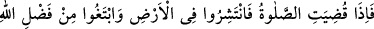
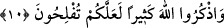

“Eğer bilmiş olsaydınız elbette bu” Allah’ın zikrine koşmanız ve alış verişi terk
etmeniz, gerçek hayrı ve şerri bilmiş olsaydınız, dünya ticaretiyle uğraşmanızdan “sizin
için daha hayırlıdır.” Çünkü âhiret menfaati daha büyük ve ebedîdir.
Rivâyet edildiğine göre Rasûlullah (s.a.) hutbe okuyup şöyle buyurdu: “Şüphesiz
Allah Teâlâ benim bu günümde, bulunduğum bu yerde cuma namazını size farz kıldı.
Başında adâletli veya zâlim bir devlet reisi bulunduğu ve hiç bir özrü de olmadığı
halde, benim hayatta bulunduğum veya âhirete intikal ettiğimden sonra terk eden
kimseye Allah bereket vermesin, iki yakasını bir araya getirmesin. İyi biliniz ki, o
kimsenin haccı da, orucu da makbul değildir. Tevbe edenin Allah tevbesini kabul
buyurur.”[132]
10. Namaz kılınınca artık yeryüzüne dağılın ve Allah’ın lütfundan isteyin. Allah’ı
çok zikredin; umulur ki kurtuluşa erersiniz.
“Namaz kılınınca artık yeryüzüne dağılın.” Kılmanız için çağrıldığınız cuma
namazını kılıp bitirdiğinizde “Allah’ın lütfundan isteyin.” Yararlı işlerinizi görmeniz
ve ihtiyaçlarınızı karşılamanız için yer yüzüne dağılın. Yâni yaşamanız için zorunlu
olarak gerekli meşru ihtiyaçlarınızı karşılamak üzere işlerinizin bulunduğu yere gidin.
Akşama kadar mescidde kalması câiz, hatta müstehab iken “yeryüzüne dağılın!”
emrinin anlamı nedir ? denilirse, Cevab: Bu emir yer yüzüne çeşitli meşru maksadlar
için dağılmanın mübah olduğuna dâir bir ruhsat anlamındadır. Azimet ifâde etmez. Yâni
namazınızın hakkını edâ ettikten sonra işleriniz için yeryüzüne dağılmanızda bir sakınca
yoktur, demektir. “Allah’ın lütfu” kâr demektir. Yâni size kolay gelen, ticaretten ve
meşru kazanç yollarından kendiniz ve çoluk çocuklarınız için helâl rızık arayın,
demektir. Bir mahzur belirtildikten sonraki mutlak emir ibaha içindir, vücub için
değildir. “İhramdan çıkınca avlanabilirsizin.” (el-Maide, 4/2) âyet-i kerîmesindeki
emir gibi.
Mebsût sâhibi İmâm Serahsî şöyle demiştir: Buradaki emir vücûb bildirmek içindir.
Çünkü Peygamberimiz (s.a.)’den rivâyet edildiğine göre: “Namazdan sonra kazanmağa
çalışmak farzdan sonra farzdır” buyurmuş[133] ve “Namaz kılınınca artık yer yüzüne
dağılın...” âyet-i kerîmesini okumuştur. Bu emrin nedb için olduğunu bildirmek için
olduğu da söylenmiştir.
Saîd b. Cübeyr’den rivâyet edildiğinie göre şöyle demiştir: Cuma’dan çıkınca
satmasan da bir malın fiyatını söyle. İbn Abbas (r.a.)’tan nakledildiğine göre bu âyette
müslümanlar dünyalık bir şey kazanmak için emredilmemişlerdir. Kendilerine
emredilen hasta ziyaret etmek, cenaze namazı kılmak ve Allah yolunda kardeşlerin